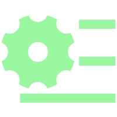

 设置配置
返回主页
⚠️
Python后端连接失败
无法连接到后端服务
重启后端
系统参数与配置
配置FPGA连接和应用参数
FPGA 连接
串口端口
波特率
9600
115200
230400
460800
921600
测试连接
● 未连接
计算设置
精度模式
整数 (INT16)
定点数 (Q15.16)
浮点数 (FP32)
自动验证计算结果
显示运算进度
界面设置
主题颜色
绿色 (默认)
蓝色
紫色
橙色
矩阵显示格式
标准格式
科学计数法
十六进制
保存设置
恢复默认
检查后端连接...